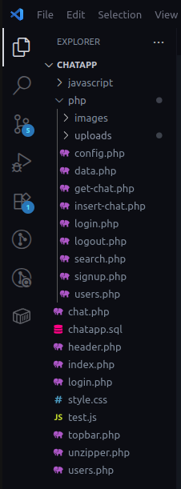

Projets Détaillés
Application de Messagerie instantanée chat
Une application web de messagerie instantanée permettant aux utilisateurs d’échanger des messages, des images, des vidéos et des fichiers, utilisant PHP, MySQL, HTML, CSS et JavaScript.
1. Présentation Générale
ChatApp est une application web de messagerie instantanée permettant aux utilisateurs d’échanger des messages, des images, des vidéos et des fichiers. Elle utilise PHP côté serveur, MySQL pour la base de données, et des technologies front-end classiques (HTML, CSS, JavaScript).
2. Fonctionnalités Principales
-
Authentification des utilisateurs (inscription, connexion, gestion de session)
Envoi et réception de messages (texte, images, vidéos, fichiers)
Affichage dynamique des conversations (mise à jour en temps réel via AJAX)
Gestion des utilisateurs (avatars, informations de profil)
Sécurité (protection contre les injections SQL, gestion des sessions)
3. Structure des fichiers
Le système d’exploitation sur lequel j’ai travaillé pour la réalisation de l’application est la distribution d' Ubuntu version 22.04 . Mais vous pouvez le réaliser aussi en utilisant le système d’exploitation Windows.
Voici la structure du dossier
Le serveur local utilisé est le serveur Xampp que vous pouvez télécharger en cliquant sur le lien : https://www.apachefriends.org/. Une fois téléchargé et installé, créez le dossier chatapp dans le dossier htdocs de Xampp. Tous les fichiers concernant l'implémentation de l’application se trouvent dans Xampp.
Vous aurez un dossier php qui contient tous les fichiers .php et un dossier javascript qui contient tous les fichier script et les restes des fichiers sont directement dans le dossier chatapp tels que : index.php , chat.php, header.php, login.php
Détaillé de certaines fichiers importants
config.php : Configuration de la connexion à la base de données.
get-chat.php : Récupération et affichage des messages d’une conversation.
login.php & signup.php : Gestion de l’authentification.
/php/insert-chat.php : Permet d'insérer les messages dans la base de données.
images : Stockage des avatars utilisateurs.
/uploads/ : Stockage des fichiers et médias envoyés.
/js/ : Scripts JavaScript pour l’interface dynamique.
/css/ : Feuilles de style pour l’interface utilisateur.
4. Détail du fichier get-chat.php
Ce fichier est responsable de l’affichage des messages entre deux utilisateurs :
- Vérification de la session : S’assure que l’utilisateur est connecté.
- Requête SQL : Sélectionne tous les messages échangés entre deux utilisateurs, triés par ordre croissant.
- Gestion des types de messages :
- Texte : Affiché dans un paragraphe.
- Image : Affiché via une balise <img>.
- Vidéo : Affiché via une balise <video>.
- Fichier : Lien de téléchargement.
- Affichage conditionnel :
- Messages envoyés : Alignés à droite.
- Messages reçus : Alignés à gauche avec avatar de l’expéditeur.
- Sécurité : Utilisation de htmlspecialchars pour éviter les failles XSS.
5. Base de données
Table users : Stocke les informations des utilisateurs (id, nom, avatar, etc.).
Table messages : Stocke chaque message (id, content, type, chemin du fichier, id expéditeur, id destinataire, date).
6. Sécurité
Sessions : Utilisation de $_SESSION pour l’authentification.
Échappement des données : Utilisation de mysqli_real_escape_string et htmlspecialchars.
Gestion des fichiers : Contrôle du type et de la taille des fichiers envoyés
7. Points d’amélioration possibles
- Ajout de la gestion des groupes.
- Notifications en temps réel (WebSocket).
- Chiffrement des messages.
- Interface responsive.
8. Conclusion
Ce projet offre une base solide pour une application de chat moderne, avec gestion des médias et sécurité de base. Il peut être enrichi selon les besoins (groupes, notifications, etc.).
Vous allez le projet sur mon compte github et apporter votre modification https://github.com/Euler98-png/tchatapp
Projet 2: API RESTful
Une API RESTful développée en Spring Boot pour gérer les données d'une plateforme e-commerce, optimisée pour la scalabilité.
Avant de commencer
Veuillez vérifier :
- Les identifiants de votre commande.
- Le numéro de votre commande.
Temps estimé : 2 minutes | Étapes : 3
Annuler ma commande
À savoir : Dans le cadre d'une souscription effectuée par téléphone ou sur internet, vous bénéficiez d'un délai légal de rétractation de 14 jours calendaires, à compter de la réception de votre mobile et de la carte SIM ou de la confirmation de commande.
Consultez les Conditions Générales de Vente.
Projet 3: Analyse de Données
Un projet d'analyse de données avec Python et Pandas pour visualiser des tendances commerciales et fournir des insights.
Avant de commencer
Veuillez vérifier :
- Les identifiants de votre commande.
- Le numéro de votre commande.
Temps estimé : 2 minutes | Étapes : 3
Annuler ma commande
À savoir : Dans le cadre d'une souscription effectuée par téléphone ou sur internet, vous bénéficiez d'un délai légal de rétractation de 14 jours calendaires, à compter de la réception de votre mobile et de la carte SIM ou de la confirmation de commande.
Consultez les Conditions Générales de Vente.